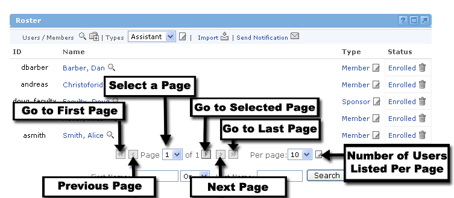

|
The roster channel appears whenever you are viewing a created offering. The default view will show the users who are currently enrolled in the offering. This includes the Sponsor (or instructor) of the offering. |
|
The roster list consists of four pieces of information about each user:
|
Navigating Through Large Rosters Beneath the roster list, there are navigation buttons that allow you to find a specific user within the offering. Here is a brief description of each button's function: 
|